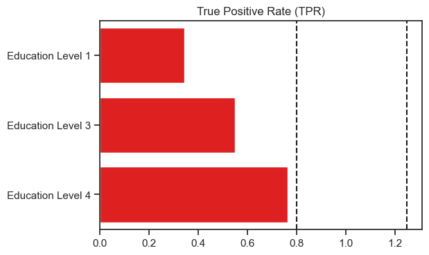
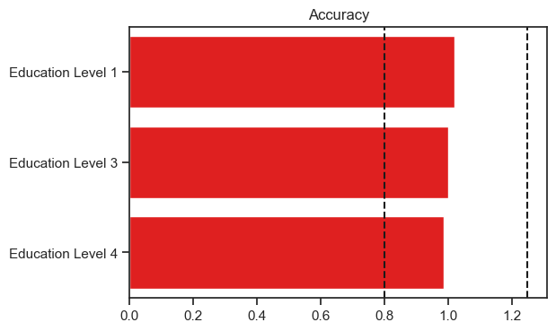
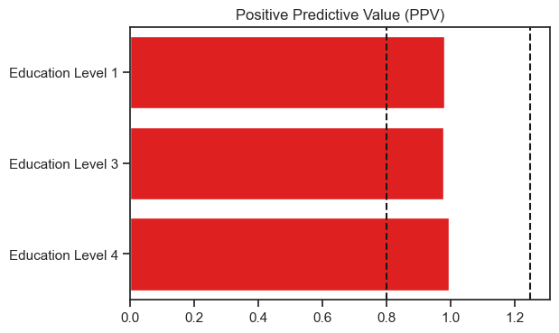
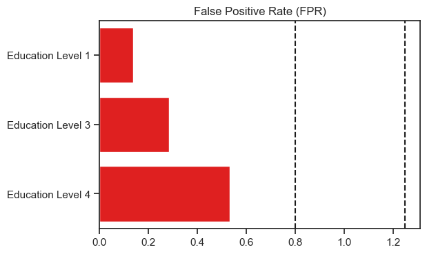
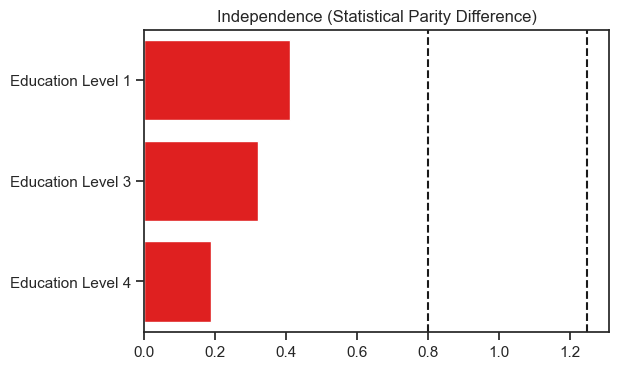
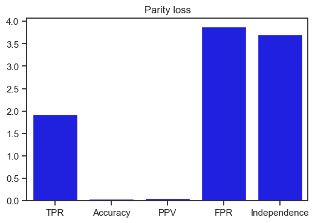

Fairness¶
from mentat import *
import pandas as pd
import seaborn as sns
sns.set(rc={"figure.dpi":100, 'savefig.dpi':100})
sns.set_context('notebook')
sns.set_style("ticks")
data = pd.read_csv("./data/credit-bias-predictions.zip")
data.head()
| NewCreditCustomer | Amount | Interest | LoanDuration | Education | NrOfDependants | EmploymentDurationCurrentEmployer | IncomeFromPrincipalEmployer | IncomeFromPension | IncomeFromFamilyAllowance | ... | Other | Owner | Owner_with_encumbrance | Tenant | Entrepreneur | Fully | Partially | Retiree | Self_employed | predicted_probabilities | |
|---|---|---|---|---|---|---|---|---|---|---|---|---|---|---|---|---|---|---|---|---|---|
| 0 | False | 530.0 | 10.68 | 36 | 4.0 | NaN | 5.0 | 0.0 | 0.0 | 0.0 | ... | 0 | 0 | 0 | 1 | 0 | 0 | 0 | 0 | 0 | 0.662289 |
| 1 | False | 530.0 | 21.57 | 24 | 4.0 | NaN | 1.0 | 0.0 | 0.0 | 0.0 | ... | 0 | 0 | 0 | 0 | 0 | 0 | 0 | 0 | 0 | 0.749224 |
| 2 | False | 2300.0 | 15.62 | 36 | 4.0 | 0.0 | 6.0 | 1159.0 | 0.0 | 0.0 | ... | 0 | 1 | 0 | 0 | 0 | 1 | 0 | 0 | 0 | 0.775058 |
| 3 | True | 530.0 | 27.36 | 36 | 4.0 | NaN | 6.0 | 0.0 | 0.0 | 0.0 | ... | 0 | 0 | 1 | 0 | 0 | 0 | 0 | 0 | 0 | 0.423509 |
| 4 | True | 4250.0 | 18.94 | 60 | 4.0 | NaN | 1.0 | 0.0 | 0.0 | 0.0 | ... | 0 | 0 | 0 | 0 | 0 | 0 | 0 | 0 | 0 | 0.535847 |
5 rows × 41 columns
data['PaidLoan'] = data.PaidLoan.astype(int)
priviledged = data[data.Education == 5.0][['PaidLoan', 'predicted_probabilities']]
ed_4 = data[data.Education == 4.0][['PaidLoan', 'predicted_probabilities']]
ed_3 = data[data.Education == 3.0][['PaidLoan', 'predicted_probabilities']]
ed_1 = data[data.Education == 1.0][['PaidLoan', 'predicted_probabilities']]
from metrics import Fairness
fairness = Fairness.create("Education Level 5", list(priviledged.PaidLoan), list(priviledged.predicted_probabilities))
fairness.addProtectedGroup("Education Level 4", list(ed_4.PaidLoan), list(ed_4.predicted_probabilities))
fairness.addProtectedGroup("Education Level 3", list(ed_3.PaidLoan), list(ed_3.predicted_probabilities))
fairness.addProtectedGroup("Education Level 1", list(ed_1.PaidLoan), list(ed_1.predicted_probabilities))
fairness.check()
from matplotlib import pyplot as plt
def plotMetric(x, y, title, bounds=True, colour="red"):
graph = sns.barplot(x=x, y=y, color=colour)
graph.set(title=title)
if bounds:
graph.axvline(fairness.getEpsilon(), linestyle="--", c='k')
graph.axvline(1.0/fairness.getEpsilon(), linestyle="--", c='k')
y = [str(f) for f in list(fairness.getTPR().keys())]
x = [float(f) for f in list(fairness.getTPR().values())]
plotMetric(x, y, "True Positive Rate (TPR)")

y = [str(f) for f in list(fairness.getAccuracy().keys())]
x = [float(f) for f in list(fairness.getAccuracy().values())]
plotMetric(x, y, "Accuracy")

y = [str(f) for f in list(fairness.getPPV().keys())]
x = [float(f) for f in list(fairness.getPPV().values())]
plotMetric(x, y, "Positive Predictive Value (PPV)")

y = [str(f) for f in list(fairness.getFPR().keys())]
x = [float(f) for f in list(fairness.getFPR().values())]
plotMetric(x, y, "False Positive Rate (FPR)")

y = [str(f) for f in list(fairness.getIndependence().keys())]
x = [float(f) for f in list(fairness.getIndependence().values())]
plotMetric(x, y, "Independence (Statistical Parity Difference)")

Parity loss¶
y = ["TPR", "Accuracy", "PPV", "FPR", "Independence"]
x = [fairness.getParityLossTPR(), fairness.getParityAccuracy(), fairness.getParityLossPPV(), fairness.getParityLossFPR(),
fairness.getParityIndependence()]
plotMetric(y, x, "Parity loss", bounds=False, colour="blue")
